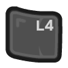
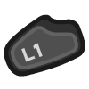

Interface¶
Some controls are available to modify your in-game interface. All of these should be pretty rarely used; there’s no clear division between “main controls” and “other”.
Chat History¶
Even in singleplayer, “chat” can be of interest as it is used for the text subtitles for a few of the in-game cutscenes. Normally chat messages are only shown for a short time, but you can look at a history of recent chat messages if you need to:

to show chat history while this combo is held.

Overhead Map¶
I basically always leave the overhead map enabled, but you may want to turn it off if for some reason you really need to see or click on units/landscape that the map is obscuring.
to toggle the overhead map on/off.
In multiplayer, dots on the map can be shown either using team colors, or with a friend/foe color scheme where your units=green, allies=blue, enemies=red.
Finally, you can resize the overhead map. If you are playing at a larger-than-original screen resolution, you probably should.
to move the cursor onto the overhead map, then
to click and drag the map to the desired size, or
Info/Stats¶
to toggle the display of whatever info you chose to associate with the capslock key in the Myth control preferences.
to show some player stats while this combo is held.
Cutscenes¶
The Myth pregame narrations and animated cutscenes are quite nice, but hey maybe you’ve seen them a lot.
 to skip a narration or cutscene.